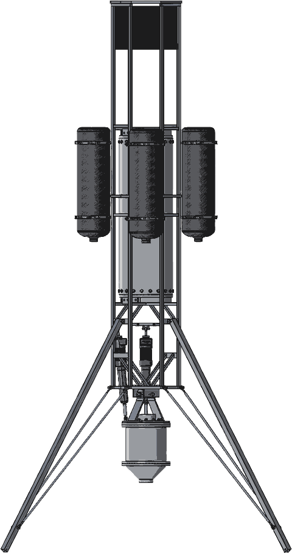

Propulsive Landers at Georgia Tech
GNC training
Guides for new members of the guidance, navigation and control subteam. Each one stands alone, has something to click on next to every idea, and ends with an exercise that plugs into the team's code.
You don't need a controls class or a rocketry background. If you write software and can follow a rate of change, start with the first guide.

Guides
- Control Control, from the ground up Hand-fly a rocket, then tune PID and feedforward on it, then see why one PID isn't enough and how the team's LQR and MPC take over. Six interactive simulations and three take-home exercises. About 90 minutes plus exercises · Python for the exercises
- Navigation Where the rocket thinks it is Sensor fusion from a complementary filter to the EKF the vehicle runs. Not written yet; the current deck is in the GNC onboarding guide on Discord. Coming
- Guidance Planning the hop Trajectory optimization and lossless convexification, the algorithm that plans Monarch's 50 m hop. Not written yet. Coming
Getting started
- Read the guide in the browser. Nothing to install. Try every simulation; they're the point.
- Do the exercises. Fork this repo, clone it, and follow the exercise README. Exercises 2 and 3 want the team's control repo cloned next to it.
- Open a pull request. Your work goes under
controls/submissions/your-handle/. Rough is fine; someone on the team will review it. Questions go in #gnc on Discord.